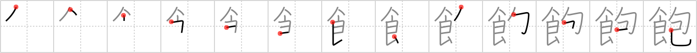

飽
← →
sated

Reading:
On-Yomi: ホウ — Kun-Yomi: あ.きる、あ.かす、あ.く
Heisig story:
Eat . . . wrap.
Koohii stories:
1) [dingomick] 1-3-2007(213): My gluttony was only sated after I ate the hamburger AND the wrapper!
2) [fuaburisu] 19-1-2006(87): This guy is sated only after eating the hamburger AND its wrapping!
3) [romanrozhok] 29-1-2008(72): 飽きる (P); 厭きる ; 倦きる ; 倦る 【あきる】 (v1,vi) to get tired of; to lose interest in; to have enough; (P) STORY: This one is easy. You go to a all you can eat steak house and eat FOOD until you are TIRED of it / Sated. Then you ask for them to WRAP up the left-overs so you can take them home.
4) [mantixen] 25-9-2008(55): I was sated, so I wrapped up the rest of my food in a doggy bag to take home.
5) [Alucard] 4-1-2007(43): I wonder why my book has a 金 instead of a 食 there.. strange.